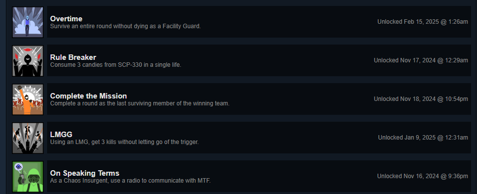
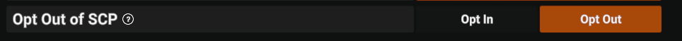
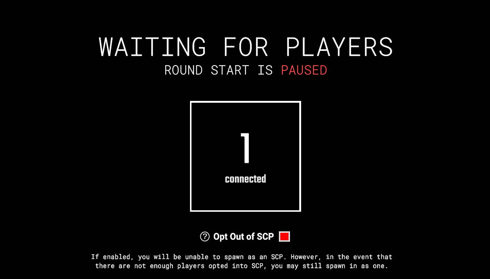
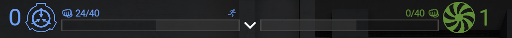

Overview
At Chaos Theory I am the Founder and Project Manager that makes sure everything runs smoothly.
I manage the many different teams that I have set up to delegate tasks to like: the moderation team
responsible for keeping the servers safe, the QA Testers which test upcoming plugin updates and
confirm bugs, the Wiki Team that keeps information on our wiki up to date, the Content Team who
creates trailers, clip complications, and guides, and most importantly the development team which
is responsible for maintaining and creating new plugins for the server. The development team is
the team I am most hands on where I lead creating new experiences for players and review the code
quality made by other team members. I am also responsible for organizing tasks for my team to do
and explaining them in ways that are easy for them to break apart.
Chaos Theory has an active player base of 20,000+ users making it one of the most popular SCPSL
servers. Our discord server has 12,000+ people in it. We are featured in many popular content
creatures videos and are fully self funded and profitable.
Connections
 Website
Website
 Wiki
Wiki
Contributed Updates
14.0 Heavy Duty
The 14.0 Heavy Duty update was the first update I joined the team on. I joined near the end of the development cycle, so I mainly worked on a lot of bug fixes. I also implemented 10 new steam achievements for the game and worked on a lot of different environment interactions especially having to do with the SCP-079 cameras.

Full Trailer14.1 Tooth And Nail
The 14.1 Tooth And Nail update was the first update that I was there for the entire development cycle. I worked a lot in supporting developers in the major additions that were SCP-127, and the new keycards. One of the main things I implemented was the SCP Opt out setting that lets players choose to not play as an SCP unless there is nobody else who can. I made sure to implement it in a way that wouldn't softlock lobbies without an SCP and in a way that wasn't abusable by players to try to game the system to get SCP.


Full Trailer14.2 Songs Of Ash
The 14.2 Songs of Ash update featured some systems changes done by my. First was a refractor of the item spawning system to give Game Design better control of what items can spawn, their groupings, and the chances that they can spawn. I also implemented Counter Miniwaves which was an extension of the Miniwave feature that when a wave failed to meat requirements it would spawn a counter wave. I had to make sure the information was properly displayed in the UI and I made it easily updatable for potential visual indicators that Game Design may want later.

Full Trailer15.0 Megapatch III
The 15.0 Megapatch III update is the first major update I have been a part of for the full cycle. That means I was given a major task for this update but since the update is unreleased and my part of the update is not public yet. I can't share specifics about it. However, what I can say about my task is it required a lot of collaboration as I teamed up with a programmer friend to implement it while also having to heavily work with Game Design and the UI/UX team. During the set-up stage we had to break the Game Design document into multiple different tasks that we made a task board for. The system we designed we made specifically with the Game Designers in mind and spent a lot of time making sure it be easy for Game Designers to add onto without needing to add any / limited amount of code.
Full Trailer